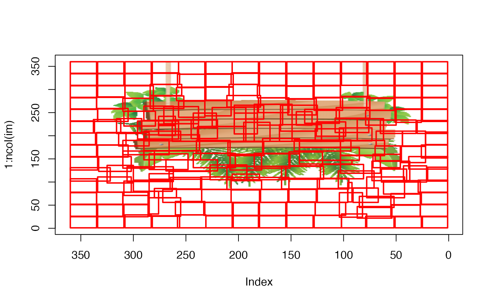

Bounding box for the superpixel labels
superpixel_bbox(superpixel_labels, non_overlapping_superpixels = FALSE)
| superpixel_labels | a matrix. The superpixel_labels parameter corresponds to the output labels of the superpixels function |
|---|---|
| non_overlapping_superpixels | either TRUE or FALSE. If TRUE then besides the (x,y) coordinates of each superpixel-segment (matrix), the overlapping indices for each superpixel will be returned (list). See the details section for more information |
If the non_overlapping_superpixels parameter is set to FALSE then : the superpixel_bbox function returns the bounding box for the labels of the superpixels function. The output is a matrix which contains the min and max indices of the x-y-coordinates and the corresponding unique superpixel labels.
If the non_overlapping_superpixels parameter is set to TRUE then : the superpixel_bbox function returns besides the previously explained matrix also the overlapping indices for each superpixel. These indices can be used to overwrite pixels with a specific value (say 0.0), which might appear in two superpixels simultaneously. This feature might be useful in case a user intends to use an algorithm and the separability of superpixel-segments is of importance.
Therefore in both cases overlapping superpixels will be computed, however if the non_overlapping_superpixels parameter is set to TRUE then also a list of overlapping indices will be returned.
library(OpenImageR) #----------- # read image #----------- path = system.file("tmp_images", "slic_im.png", package = "OpenImageR") im = readImage(path) im = im[,, 1:3] #-------------------- # compute superpixels #-------------------- res = superpixels(input_image = im, method = "slic", superpixel = 200, compactness = 20, return_labels = TRUE)#> Warning: The input data has values between 0.094118 and 1.000000. The image-data will be multiplied by the value: 255!#------------------------- # compute the bounding box #------------------------- bbox = superpixel_bbox(res$labels, non_overlapping_superpixels = FALSE) #------------------------------------------- # plot the bounding boxes of the superpixels ( for illustration purposes ) #------------------------------------------- graphics::plot(1:ncol(im), type='n', xlim = c(ncol(im), 1), ylim = c(1, nrow(im)))for (i in 1:nrow(bbox)) { # the order of the bounding box is c('xmin', 'ymin', 'xmax', 'ymax') graphics::rect(bbox[i,3], bbox[i,1], bbox[i,4], bbox[i,2], border = "red", lwd = 2) }